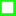

<!doctype html>
<html lang="en">
    <head>
        <meta charset="utf-8">
        <meta http-equiv="X-UA-Compatible" content="IE=edge">
        <meta name="viewport" content="initial-scale=1,user-scalable=no,maximum-scale=1,width=device-width">
        <meta name="mobile-web-app-capable" content="yes">
        <meta name="apple-mobile-web-app-capable" content="yes">
        <link rel="stylesheet" href="css/leaflet.css">
        <link rel="stylesheet" href="css/qgis2web.css"><link rel="stylesheet" href="css/fontawesome-all.min.css">
        <link rel="stylesheet" href="css/leaflet-measure.css">
        <style>
        html, body, #map {
            width: 100%;
            height: 100%;
            padding: 0;
            margin: 0;
        }
        </style>
        <title>Deponi Bjørkemoen</title>
    </head>
    <body>
        <div id="map">
        </div>
        <script src="js/qgis2web_expressions.js"></script>
        <script src="js/leaflet.js"></script>
        <script src="js/leaflet.rotatedMarker.js"></script>
        <script src="js/leaflet.pattern.js"></script>
        <script src="js/leaflet-hash.js"></script>
        <script src="js/Autolinker.min.js"></script>
        <script src="js/rbush.min.js"></script>
        <script src="js/labelgun.min.js"></script>
        <script src="js/labels.js"></script>
        <script src="js/leaflet-measure.js"></script>
        <script src="data/Deponi_1.js"></script>
        <script src="data/Gips__Asbest_2.js"></script>
        <script src="data/brnnerbjrke_3.js"></script>
        <script>
        var map = L.map('map', {
            zoomControl:true, maxZoom:28, minZoom:1
        })
        var hash = new L.Hash(map);
        map.attributionControl.setPrefix('<a href="https://github.com/tomchadwin/qgis2web" target="_blank">qgis2web</a> &middot; <a href="https://leafletjs.com" title="A JS library for interactive maps">Leaflet</a> &middot; <a href="https://qgis.org">QGIS</a>');
        var autolinker = new Autolinker({truncate: {length: 30, location: 'smart'}});
        var measureControl = new L.Control.Measure({
            position: 'topleft',
            primaryLengthUnit: 'meters',
            secondaryLengthUnit: 'kilometers',
            primaryAreaUnit: 'sqmeters',
            secondaryAreaUnit: 'hectares'
        });
        measureControl.addTo(map);
        document.getElementsByClassName('leaflet-control-measure-toggle')[0]
        .innerHTML = '';
        document.getElementsByClassName('leaflet-control-measure-toggle')[0]
        .className += ' fas fa-ruler';
        var bounds_group = new L.featureGroup([]);
        function setBounds() {
            if (bounds_group.getLayers().length) {
                map.fitBounds(bounds_group.getBounds());
            }
        }
        map.createPane('pane_Norgeibilder1_modifisert_0');
        map.getPane('pane_Norgeibilder1_modifisert_0').style.zIndex = 400;
        var img_Norgeibilder1_modifisert_0 = 'data/Norgeibilder1_modifisert_0.png';
        var img_bounds_Norgeibilder1_modifisert_0 = [[60.63525071796055,6.514660746359623],[60.63921884428686,6.525800087705012]];
        var layer_Norgeibilder1_modifisert_0 = new L.imageOverlay(img_Norgeibilder1_modifisert_0,
                                              img_bounds_Norgeibilder1_modifisert_0,
                                              {pane: 'pane_Norgeibilder1_modifisert_0'});
        bounds_group.addLayer(layer_Norgeibilder1_modifisert_0);
        map.addLayer(layer_Norgeibilder1_modifisert_0);
        function pop_Deponi_1(feature, layer) {
            var popupContent = '<table>\
                    <tr>\
                        <td colspan="2"><strong>ID</strong><br />' + (feature.properties['id'] !== null ? autolinker.link(feature.properties['id'].toLocaleString()) : '') + '</td>\
                    </tr>\
                    <tr>\
                        <td colspan="2"><strong>Tidsperiode i drift</strong><br />' + (feature.properties['Epoke'] !== null ? autolinker.link(feature.properties['Epoke'].toLocaleString()) : '') + '</td>\
                    </tr>\
                    <tr>\
                        <td colspan="2"><strong>Avfall</strong><br />' + (feature.properties['Avfall'] !== null ? autolinker.link(feature.properties['Avfall'].toLocaleString()) : '') + '</td>\
                    </tr>\
                    <tr>\
                        <td colspan="2"><strong>Areal M^2</strong><br />' + (feature.properties['Areal M^2'] !== null ? autolinker.link(feature.properties['Areal M^2'].toLocaleString()) : '') + '</td>\
                    </tr>\
                    <tr>\
                        <td colspan="2"><strong>Dybde M</strong><br />' + (feature.properties['Kotehøyde'] !== null ? autolinker.link(feature.properties['Kotehøyde'].toLocaleString()) : '') + '</td>\
                    </tr>\
                    <tr>\
                        <td colspan="2"><strong>Mengde M^3</strong><br />' + (feature.properties['Mengde M^3'] !== null ? autolinker.link(feature.properties['Mengde M^3'].toLocaleString()) : '') + '</td>\
                    </tr>\
                    <tr>\
                        <td colspan="2"><strong>Toppdekke</strong><br />' + (feature.properties['Toppdekke'] !== null ? autolinker.link(feature.properties['Toppdekke'].toLocaleString()) : '') + '</td>\
                    </tr>\
                    <tr>\
                        <td colspan="2"><strong>Kjent kunnskap om bunntetting</strong><br />' + (feature.properties['Bunntettin'] !== null ? autolinker.link(feature.properties['Bunntettin'].toLocaleString()) : '') + '</td>\
                    </tr>\
                    <tr>\
                        <td colspan="2"><strong>Info</strong><br />' + (feature.properties['Bilde'] !== null ? '' : '') + '</td>\
                    </tr>\
                    <tr>\
                        <td colspan="2"><strong>Selskap</strong><br />' + (feature.properties['Selskap'] !== null ? autolinker.link(feature.properties['Selskap'].toLocaleString()) : '') + '</td>\
                    </tr>\
                </table>';
            layer.bindPopup(popupContent, {maxHeight: 400});
        }

        function style_Deponi_1_0(feature) {
            if (feature.properties['id'] >= 0.000000 && feature.properties['id'] <= 18.000000 ) {
                return {
                pane: 'pane_Deponi_1',
                opacity: 1,
                color: 'rgba(15,255,7,0.623)',
                dashArray: '',
                lineCap: 'square',
                lineJoin: 'bevel',
                weight: 4.0,
                fillOpacity: 0,
                interactive: true,
            }
            }
            if (feature.properties['id'] >= 18.000000 && feature.properties['id'] <= 23.000000 ) {
                return {
                pane: 'pane_Deponi_1',
                opacity: 1,
                color: 'rgba(254,6,209,0.623)',
                dashArray: '',
                lineCap: 'square',
                lineJoin: 'bevel',
                weight: 4.0,
                fillOpacity: 0,
                interactive: true,
            }
            }
        }
        map.createPane('pane_Deponi_1');
        map.getPane('pane_Deponi_1').style.zIndex = 401;
        map.getPane('pane_Deponi_1').style['mix-blend-mode'] = 'normal';
        var layer_Deponi_1 = new L.geoJson(json_Deponi_1, {
            attribution: '',
            interactive: true,
            dataVar: 'json_Deponi_1',
            layerName: 'layer_Deponi_1',
            pane: 'pane_Deponi_1',
            onEachFeature: pop_Deponi_1,
            style: style_Deponi_1_0,
        });
        bounds_group.addLayer(layer_Deponi_1);
        map.addLayer(layer_Deponi_1);
        function pop_Gips__Asbest_2(feature, layer) {
            var popupContent = '<table>\
                    <tr>\
                        <td colspan="2"><strong>Avfall</strong><br />' + (feature.properties['Avfall'] !== null ? autolinker.link(feature.properties['Avfall'].toLocaleString()) : '') + '</td>\
                    </tr>\
                    <tr>\
                        <td colspan="2"><strong>fid</strong><br />' + (feature.properties['fid'] !== null ? autolinker.link(feature.properties['fid'].toLocaleString()) : '') + '</td>\
                    </tr>\
                    <tr>\
                        <td colspan="2"><strong>Areal M^2 </strong><br />' + (feature.properties['Areal'] !== null ? autolinker.link(feature.properties['Areal'].toLocaleString()) : '') + '</td>\
                    </tr>\
                </table>';
            layer.bindPopup(popupContent, {maxHeight: 400});
        }

        function style_Gips__Asbest_2_0() {
            return {
                pane: 'pane_Gips__Asbest_2',
                opacity: 1,
                color: 'rgba(0,0,0,1.0)',
                dashArray: '10,5',
                lineCap: 'square',
                lineJoin: 'bevel',
                weight: 2.0,
                fillOpacity: 0,
                interactive: true,
            }
        }
        map.createPane('pane_Gips__Asbest_2');
        map.getPane('pane_Gips__Asbest_2').style.zIndex = 402;
        map.getPane('pane_Gips__Asbest_2').style['mix-blend-mode'] = 'normal';
        var layer_Gips__Asbest_2 = new L.geoJson(json_Gips__Asbest_2, {
            attribution: '',
            interactive: true,
            dataVar: 'json_Gips__Asbest_2',
            layerName: 'layer_Gips__Asbest_2',
            pane: 'pane_Gips__Asbest_2',
            onEachFeature: pop_Gips__Asbest_2,
            style: style_Gips__Asbest_2_0,
        });
        bounds_group.addLayer(layer_Gips__Asbest_2);
        map.addLayer(layer_Gips__Asbest_2);
        function pop_brnnerbjrke_3(feature, layer) {
            var popupContent = '<table>\
                    <tr>\
                        <td colspan="2"><strong>fid</strong><br />' + (feature.properties['fid'] !== null ? autolinker.link(feature.properties['fid'].toLocaleString()) : '') + '</td>\
                    </tr>\
                    <tr>\
                        <td colspan="2"><strong>Latitude</strong><br />' + (feature.properties['Latitude'] !== null ? autolinker.link(feature.properties['Latitude'].toLocaleString()) : '') + '</td>\
                    </tr>\
                    <tr>\
                        <td colspan="2"><strong>Longitude</strong><br />' + (feature.properties['Longitude'] !== null ? autolinker.link(feature.properties['Longitude'].toLocaleString()) : '') + '</td>\
                    </tr>\
                    <tr>\
                        <td colspan="2"><strong>Title</strong><br />' + (feature.properties['Title'] !== null ? autolinker.link(feature.properties['Title'].toLocaleString()) : '') + '</td>\
                    </tr>\
                    <tr>\
                        <td colspan="2"><strong>Timestamp</strong><br />' + (feature.properties['Timestamp'] !== null ? autolinker.link(feature.properties['Timestamp'].toLocaleString()) : '') + '</td>\
                    </tr>\
                </table>';
            layer.bindPopup(popupContent, {maxHeight: 400});
        }

        function style_brnnerbjrke_3_0() {
            return {
                pane: 'pane_brnnerbjrke_3',
                radius: 4.4,
                opacity: 1,
                color: 'rgba(35,35,35,1.0)',
                dashArray: '',
                lineCap: 'butt',
                lineJoin: 'miter',
                weight: 1,
                fill: true,
                fillOpacity: 1,
                fillColor: 'rgba(5,1,255,1.0)',
                interactive: true,
            }
        }
        map.createPane('pane_brnnerbjrke_3');
        map.getPane('pane_brnnerbjrke_3').style.zIndex = 403;
        map.getPane('pane_brnnerbjrke_3').style['mix-blend-mode'] = 'normal';
        var layer_brnnerbjrke_3 = new L.geoJson(json_brnnerbjrke_3, {
            attribution: '',
            interactive: true,
            dataVar: 'json_brnnerbjrke_3',
            layerName: 'layer_brnnerbjrke_3',
            pane: 'pane_brnnerbjrke_3',
            onEachFeature: pop_brnnerbjrke_3,
            pointToLayer: function (feature, latlng) {
                var context = {
                    feature: feature,
                    variables: {}
                };
                return L.circleMarker(latlng, style_brnnerbjrke_3_0(feature));
            },
        });
        bounds_group.addLayer(layer_brnnerbjrke_3);
        map.addLayer(layer_brnnerbjrke_3);
            var title = new L.Control();
            title.onAdd = function (map) {
                this._div = L.DomUtil.create('div', 'info');
                this.update();
                return this._div;
            };
            title.update = function () {
                this._div.innerHTML = '<h2>Deponi Bjørkemoen</h2>';
            };
            title.addTo(map);
        var baseMaps = {};
        L.control.layers(baseMaps,{' brønner bjørke': layer_brnnerbjrke_3,' Gips__Asbest': layer_Gips__Asbest_2,'Deponi<br /><table><tr><td style="text-align: center;"></td><td>0.0 - 0.0</td></tr><tr><td style="text-align: center;"></td><td>0 - 0</td></tr></table>': layer_Deponi_1,"Norge i bilder1_modifisert": layer_Norgeibilder1_modifisert_0,}).addTo(map);
        setBounds();
        var i = 0;
        layer_Deponi_1.eachLayer(function(layer) {
            var context = {
                feature: layer.feature,
                variables: {}
            };
            layer.bindTooltip((layer.feature.properties['Epoke'] !== null?String('<div style="color: #01ffff; font-size: 10pt; font-weight: bold; font-family: \'Arial\', sans-serif;">' + layer.feature.properties['Epoke']) + '</div>':''), {permanent: true, offset: [-0, -16], className: 'css_Deponi_1'});
            labels.push(layer);
            totalMarkers += 1;
              layer.added = true;
              addLabel(layer, i);
              i++;
        });
        L.ImageOverlay.include({
            getBounds: function () {
                return this._bounds;
            }
        });
        resetLabels([layer_Deponi_1,layer_brnnerbjrke_3]);
        map.on("zoomend", function(){
            resetLabels([layer_Deponi_1,layer_brnnerbjrke_3]);
        });
        map.on("layeradd", function(){
            resetLabels([layer_Deponi_1,layer_brnnerbjrke_3]);
        });
        map.on("layerremove", function(){
            resetLabels([layer_Deponi_1,layer_brnnerbjrke_3]);
        });
        </script>
    </body>
</html>
